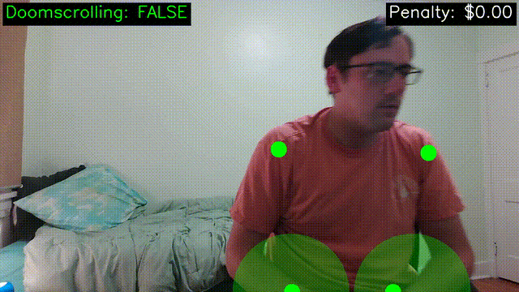
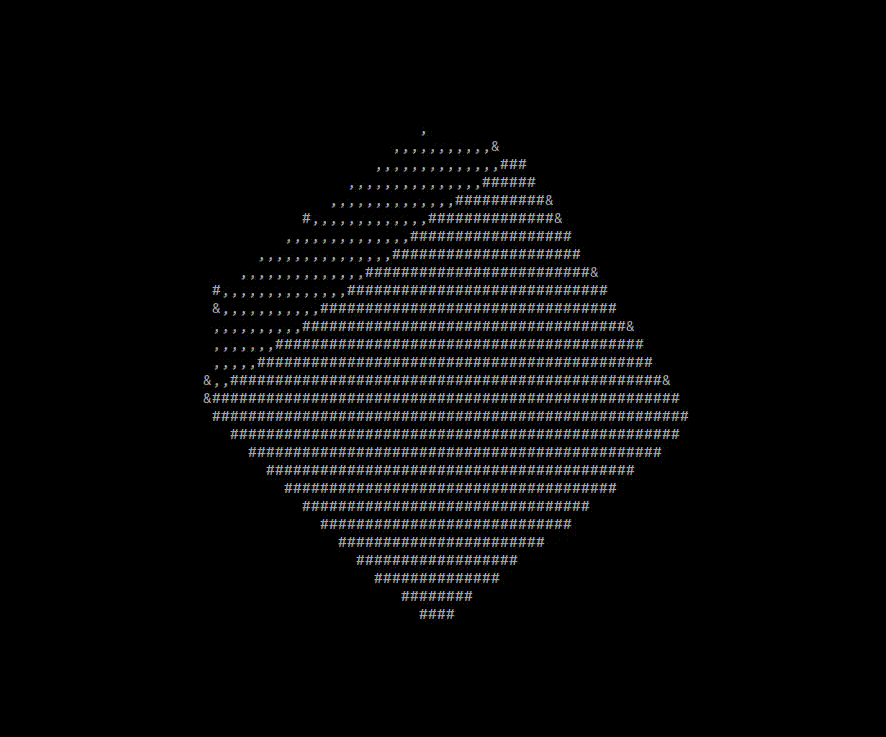
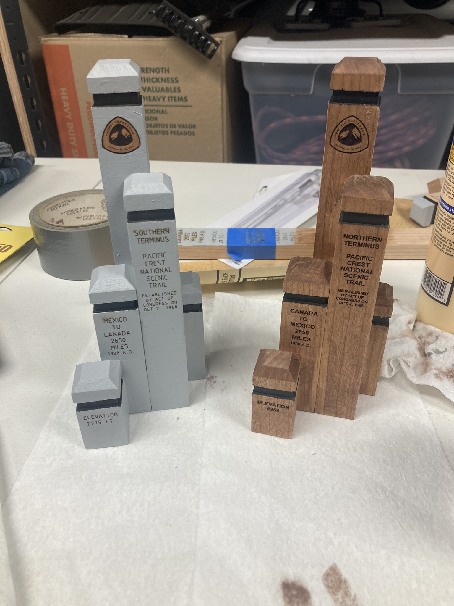
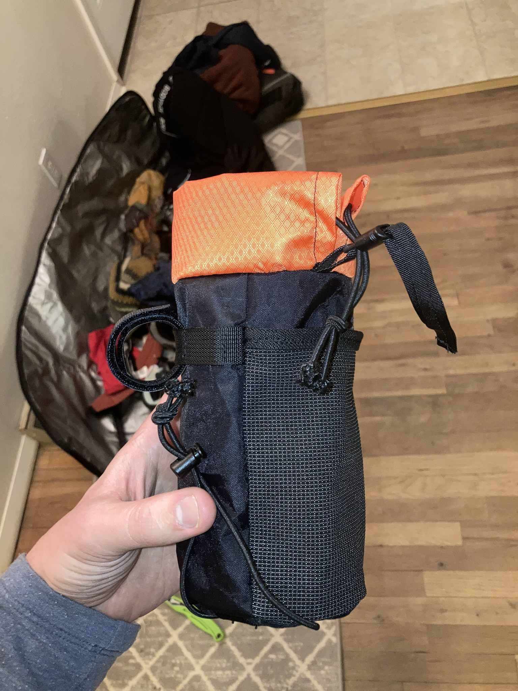
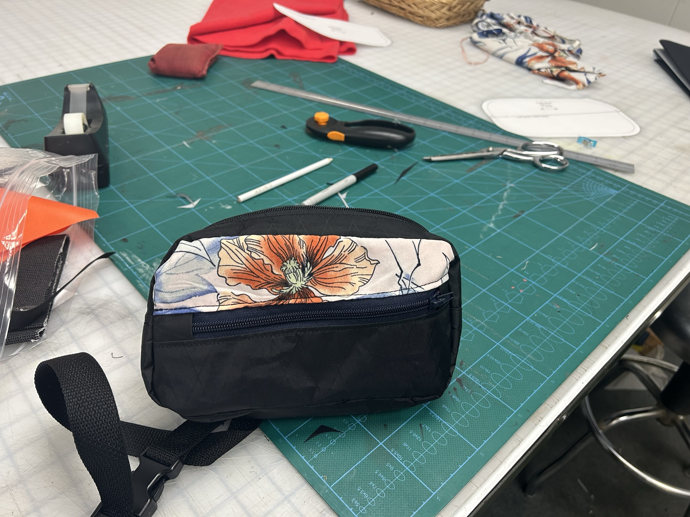
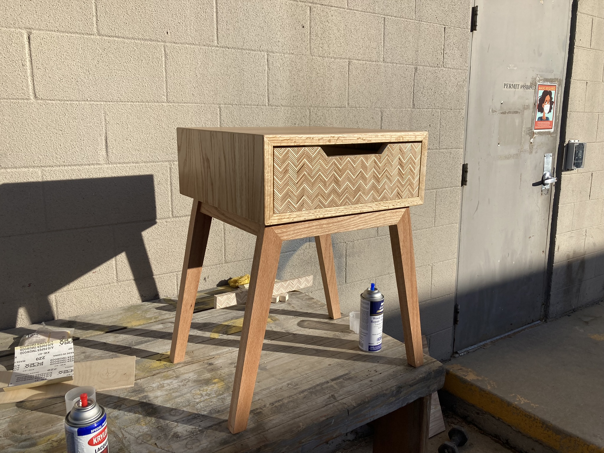

Hardware
A PCB I designed and fabricated for a mobile manipulator robot. It takes in 24 V from two car batteries, routes it to a robot arm and LiDAR, and regulates it down for a Jetson Orin and dynamixel gripper. It also includes protection circuitry like a reverse-polarity MOSFET, bulk capacitors, and blade fuses.

Low-wavelength ultraviolet light can effectively treat crops for powdery mildew and other pests on farms. I productized this on a strawberry-picking robot at Tortuga AgTech.
A lock-out fixture for ultraviolet lightbulbs (UVC light causes sunburn and eye damage). It uses a limit switch to cut power if the PVC cover is removed. I also had to add ventilation because the lights heat up the PVC too much.

Software
A fun app that uses the popular YOLO computer vision model to detect whether you're scrolling on your phone while reclining and begins charging your credit card $0.25/second. I learned the basics of openCV, learned that uvicorn servers can serve static files, which is handy for avoiding a React mess. I built this for Hack CMU 2025 over 24 hours.

STEM diagram generation and interpretation using LLMs. This app can tutor introductory physics with free body diagrams! I learned to use server-sent events with this project in order to get that nice token-streaming behavior that LLM apps have, and cursed at d3.js a bit more.
An experiment in LLM-powered electronics design. Useful for learning, and, fleshed out, I think it could be useful for circuit design and debugging, like Falstad's Circuit Simulator. I learned about the directed graph data structure to write the layout algorithm on the backend, and also used Python on the server (FastAPI) for the first time. Also cursed at d3.js a bit.
A game to practice order-of-magnitude reasoning (think "What volume of air does humanity inhale in a day?"). This got 3k visits and HN front page! This was my deepest dive into design/styling yet, and also learned the importance of thinking carefully about your data model, early.
A small language model I trained to learn the basics of ML (pure pytorch, no frameworks). Inspired by the very helpful intro repo from Andrej Karpathy.
A fun experiment in rendering platonic solids to the terminal in ascii characters with C. Inspired by this famous blogpost.

A spotify playback app. I learned authentication and public API usage with this project.
Non-Engineering
PCT Trail monuments in Cherry. It was fun to use the laser for this.

End-grain cutting board from I think oak.

Custom bikepacking bottle holder with cinch closure. You can make crazy good outdoor gear in a weekend with zero preexisting sewing skills, who knew?

Sling I made for my sister, upcycled from an old shirt of hers.

Hoody I made! My first piece of apparel.

My first major woodworking project - a nightstand with a patterned plywood drawerfront.
